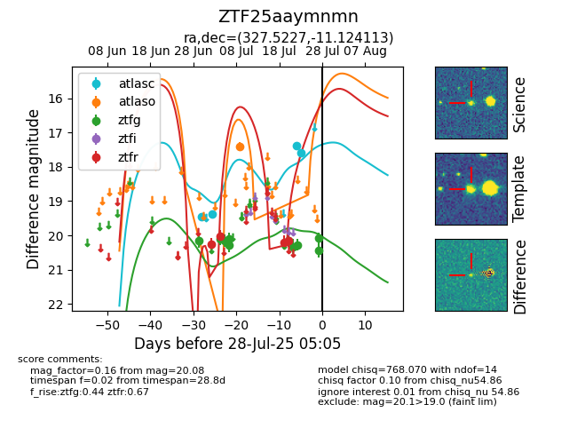

Target ZTF25aaymnmn at 2025-07-28 05:05, see:
FINK: fink-portal.org/ZTF25aaymnmn
Lasair: lasair-ztf.lsst.ac.uk/objects/ZTF25aaymnmn
ALeRCE: alerce.online/object/ZTF25aaymnmn
alt names
ZTF25aaymnmn (ztf,fink)
coordinates:
equatorial (ra, dec) = (327.5227,-11.12411)
galactic (l, b) = (44.4958,-44.57386)
photometry
last atlasc=17.59, atlaso=17.41, ztfg=20.08, ztfr=20.15
4 atlasc, 1 atlaso, 10 ztfg, 4 ztfr detections
